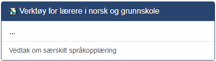

Vedtak om særskilt språkopplæring
Hvorfor gjør vi dette?
Etter oppstart i forberedende opplæring for voksne, skal skolen minimum årlig kartlegge om deltakeren kan norsk godt nok til å følge den vanlige opplæringen, §19-8, jamfør §3-6. Resultatet av kartleggingen utgjør grunnlaget for et vedtak om særskilt språkopplæring, og for beskrivelsen av innhold og organisering av opplæringen.
I praksis betyr dette at vi gir vedtak om særskilt språkopplæring som er gyldig i 1 år om gangen. Lærere vil kunne vurdere alle som mangler vedtak eller som har mindre en 6 måneder igjen på vedtaket om særskilt språkopplæring.
Før du går i gang med prosessen
Før du går i gang med prosessen bør du ha en formening om hvilke deltakere i klassen din som har behov for særskilt språkopplæring. For deltakere du mener har behov for særskilt språkopplæring bør du og ha vurdert norsknivået deres og hatt en samtale med deltaker der dette er tema ettersom dette er informasjon som blir bedt om i prosessen.
Finne fram i e:Vision
Fra startsiden i e:Vision trykker du på Lærer i toppmenyen.
Deretter trykker du på Vedtak om særskilt språkopplæring under Verktøy for lærere i norsk og grunnskole

Navigere prosessen for vedtak om særskilt språkopplæring
Velg klasse for vedtak om særskilt språkopplæring
Her må du velge klassen du skal vurdere og trykke neste. Kommer det en rapport med overskrift "Det var ingen av deltakerne i klassen som kan få nytt vedtak på nåværende tidspunkt." kan du trygt ignorere denne klassen.
Jeg får opp flere klasser i listen.
Prosessen gjøres klassevis. Har du flere klasser du skal vurdere for må du først velge en klasse å gå gjennom prosessen for den. Så kan du starte prosessen på nytt og velge en annen klasse.
Fylle inn skjema
Her dukker det opp et skjema du skal fylle ut. Får hver deltaker du skal vurdere fyller du inn følgende:
| Overskrift | Hva skal fylles inn? |
|---|---|
| Muntlig nivå | Muntlig nivå du vurderer deltaker til. |
| Muntlig nivå | Skriftlig nivå du vurderer deltaker til. |
| Rask | Huk av hvis du opplever deltakers prograsjon som rask. |
| Vedtak | Ja betyr at du har vurdert et behov for særskilt opplæring og vil sende et vedtak om dette. Nei betyr at du ikke vurderer et behov for særskilt språkopplæring. En tom boks betyr at du ikke ønsker å vurdere deltaker nå |
| Samtaledato | Fylles inn med dato lærer snakket med deltaker for de som skal ha særskilt språkopplæring. |
Hva består skjemaet av?
| Overskrift | Betydning |
|---|---|
| Deltakernr | SPR-nummer på deltaker |
| Navn | Fullt navn på deltaker |
| Antall vedtak - Ikke | Antall ganger det har blitt vurdert at det ikke er behov for særskilt språkopplæring |
| Antall vedtak innvilget | Antall ganger det har blitt vurdert at det er behov for særskilt språkopplæring |
| Maks sluttdato | Når den siste avgjørelsen av behov om særskilt språkopplæring går ut |
| Status nyeste vedtak | Om den siste vurderingen var at det var behov eller ikke behov for særskilt språkopplæring |
| Muntlig nivå | Muntlig nivå deltaker er på nå. Kan oppdateres av lærer. |
| Skriftlig nivå | Skriftlig nivå deltaker er på nå. Kan oppdateres av lærer. |
| Rask | Om deltaker har rask progresjon. Kan oppdateres av lærer. |
| Vedtak | Fylles inn med avgjørelse om deltaker skal ha særskilt språkopplæring eller ei |
| Samtaledato | Fylles inn med dato lærer snakket med deltaker for de som skal ha særskilt språkopplæring |
Hva gjør jeg hvis jeg har registrert en feil?
Hvis du har registrert noe feil før du har trykket neste kan du bare endre verdien til det riktige. Hvis du er usikker på hva det originale verdien var kan du lukke prosessen og åpne den igjen.
Se gjennom utfallet
Når du har trykket neste fra skjemet begynner eVision å gjøre noen prosesser. Når den er ferdig får du en rapport der det står endringer, se gjennom denne og trykk Ferdig.
Hva gjør jeg hvis jeg har gjort en feil?
Hvis du har registrert noe feil etter at SITS har kjørt ferdig prosessen, enten med norsknivå eller feilvurdering av vedtaksbehov, må du ta kontakt med deltakerkontoret på skolen din. Beskriv feilen slik at de kan rette opp. Gjør gjerne dette så raskt som mulig så vi ikke sender ut vedtaksbrev med feil.
Oppdatert 09.10.2025 av Hågard Meyer